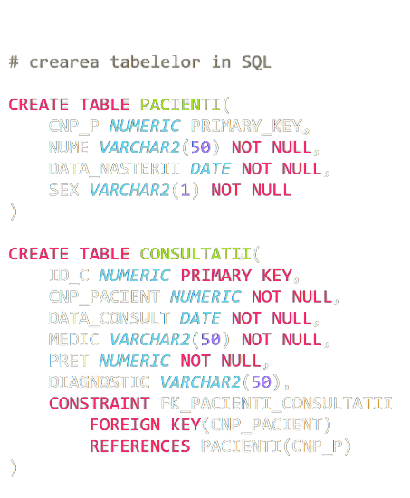
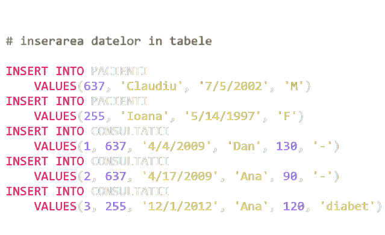
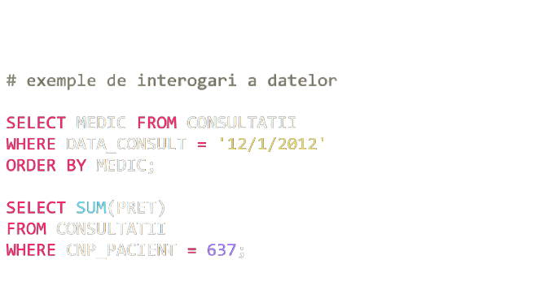

<body>
</body>
<html>
</html>
<h2>
</h2>
<p>
</p>
Exemple de cod SQL



Limbajul SQL
SQL (Structured Query Language) este un limbaj de interogare a bazei de date (nu un limbaj
de dezvoltare) care permite adăugarea, accesarea și gestionarea conținutului într-o bază
de date. Este limbajul care permite programatorilor să execute acronimul comun CRUD (Creați;
Citiți; Actualizați; Ștergeți) într-o bază de date.
Cine îl folosește?
- Profesii și industrii:
-
Dezvoltatori de server SQL, testeri de baze de date,
dezvoltatori de software, administratori de baze de date
-
Utilizat în industrii precum tehnologia informației, inginerie, proiectare, gestionare,
servere profesionale, afaceri și finanțe
- SQL este utilizat de majoritatea companiilor și organizațiilor
care colectează date. Exemple includ Robert Half Technology, Nigel Frank, CyberCoders și
UnitedHealthCare.
- Specializări:
Analiza datelor și extragerea datelor mari
Ce face ca învățarea lui să fie importantă?
-
SQL interacționează cu baza de date backend a aplicației web. Este limbajul bazei de
date „de facto standard”, utilizat întotdeauna împreună cu un alt limbaj de programare.
Programele SQL sunt implementate ca o modalitate pentru companii și organizații de a
accesa și manipula informațiile stocate în bazele lor de date.
-
Sistemele de gestionare a bazelor de date relaționale care utilizează SQL includ MySQL
(de la Oracle), Sybase, Microsoft SQL Server și altele.
-
Caracteristici:
-
Sintaxă simplă
-
Cel mai popular limbaj utilizat pentru crearea, modificarea și manipularea datelor
-
Este una dintre abilitățile industriale solicitate.
De unde a început?
SQL a fost inițial dezvoltat la compania IBM de către Donald D. Chamberlin
și Raymond F. Boyce în anul 1974. Inițial numele era SEQUEL (tot de la Structured
Query Language) și avea ca scop manipularea și regăsirea datelor stocate în
bazele de date relaționale IBM. La sfârșitul anilor '70, compania Relational
Software, Inc. (în prezent Oracle Corporation) a văzut potențialul acestor
concepte descrise de Codd, Chamberlin și Boyce, și a dezvoltat propriul SQL
RDBMS cu aplicații la U.S. Navy, Central Intelligence Agency și U.S. Government.
În iunie 1979, Relational Software a introdus prima implementare comercială
disponibilă de SQL, Oracle. După testarea SQL, au apărut implementări ale
acestui limbaj și din partea firmei IBM: SQL/DS și DB2.
Avantajele limbajului:
-
Procesare mai rapidă a interogărilor - O cantitate mare de date
este recuperată rapid și eficient. Operațiuni precum inserarea, ștergerea,
manipularea datelor se fac, de asemenea, în aproape puțin timp.
-
Lipsa nevoii abilităților de coding - Pentru manipularea datelor, nu este necesar
un număr mare de linii de cod. Sunt utilizate toate cuvintele cheie de
bază, cum ar fi SELECT, INSERT INTO, UPDATE, etc., iar regulile sintactice
nu sunt complexe în SQL, ceea ce îl face un limbaj ușor de utilizat.
-
Portabil- Poate fi utilizat în programe pe PC-uri, server, laptopuri
independente de orice platformă (sistem de operare etc.). De asemenea,
poate fi încorporat cu alte aplicații în funcție de necesitate / cerință /
utilizare.